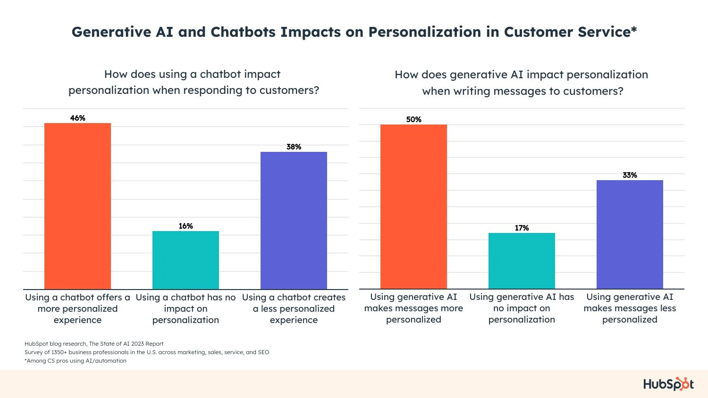
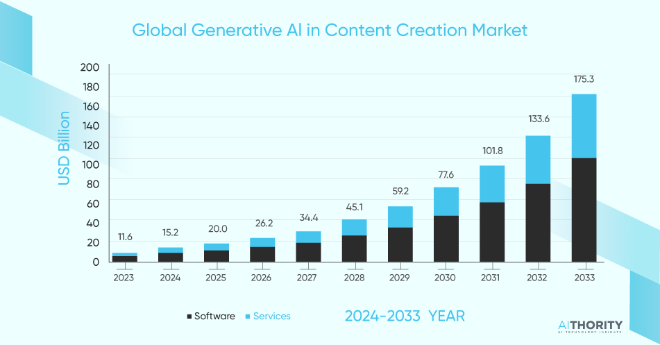

Example 1: Customer Support and Virtual Assistants
Various businesses now employ the use of ChatGPT and other AI chatbots in communicating with their customers. Intelligent, AI-powered virtual assistants can do a lot more these days, including answering frequently asked questions, guiding through troubleshooting, and giving real-time support. Large companies, such as Shopify and Bank of America, have integrated AI-powered chatbots to support customers with basic queries. This enhances efficiency by freeing up the workload of human support agents. AI systems can respond 24/7, handle multiple requests simultaneously, and provide responses personalized to each customer's request, thus enhancing the overall customer experience.
Challenges in this Context: Dependence on AI
Over-reliance on AI could lead to reduction in human-to-human interaction, lessen our problem solving skills, increase cheating, etc. For example, if you rely on AI too much in customer service, it can result in a reduction in human-to-human interaction which could lead to frustration if the AI fails to address more complex or subtle issues.

Example 2: Content Creation/ copywriting
Another mainstream use of ChatGPT is content creation. Be it blogging, product descriptions, social media content, or even ideas related to creative projects, AI tools like ChatGPT have now become invaluable in the hands of content creators, marketers, and businesses. For example, BuzzFeed has already started integrating ChatGPT into its content workflow to brainstorm article topics, write article drafts, and even create personalized quizzes using the technology. Equally, the technology and e-commerce companies use AI software for generating high-quality copy in a fraction of the time a human writer would take, hence incredibly boosting their productivity.
Challenges in this Context: Quality and Accuracy/ Job Displacement
ChatGPT has been known to produce errors and spit out wrong information. Even though it can generate fluent and coherent text, it can still produce errors and biased responses. Trying to ensure that AI is reliable and ethically moral is a constant issue with the current state of AI. In terms of job displacement, AI has more recently been scaring certain fields that their jobs are going to be taken away and replaced by AI. For example, roles that involve repetitive tasks like a customer service representative, writers, data analysis, artists, and many more are particularly vulnerable to being replaced by AI. This in term raises concerns about future job displacement and the future of work in these certain fields.
